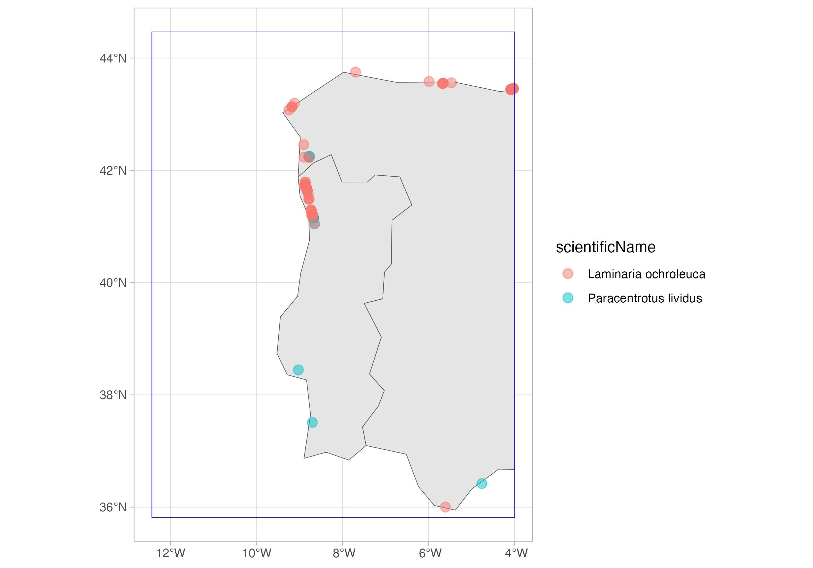
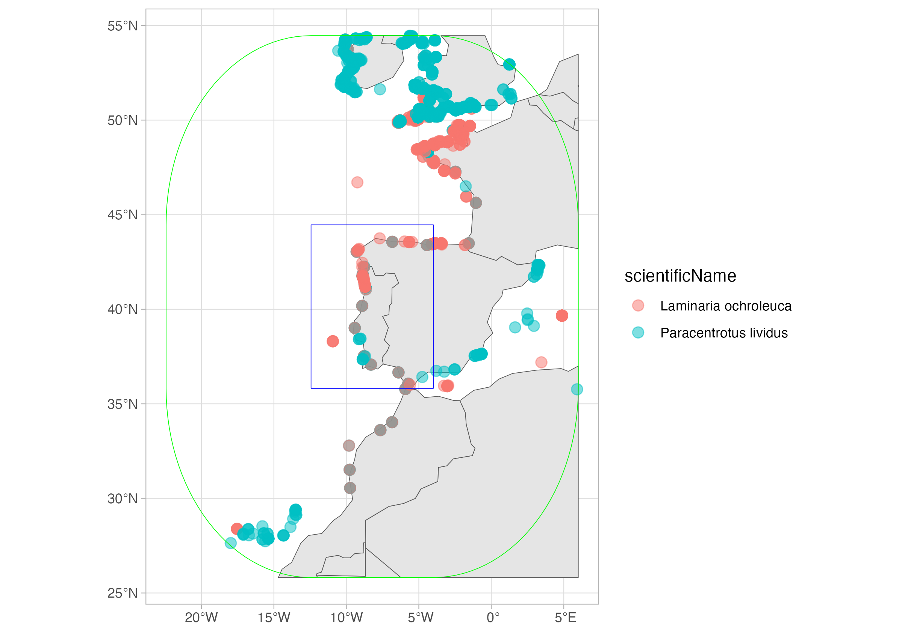
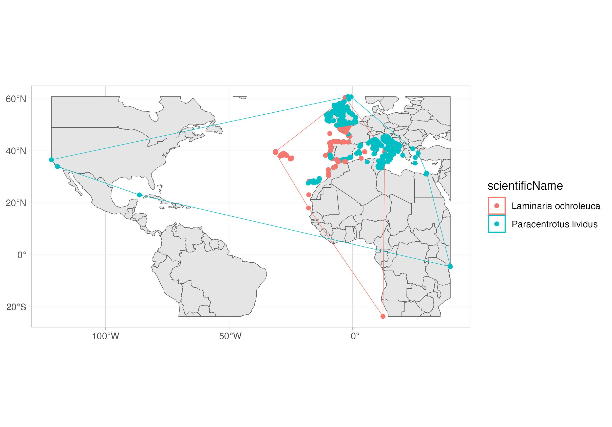

Using DuckDB to query the OBIS full export - Part 2 (spatial extension)
OBIS now has a full export in GeoParquet format, but to work with large datasets you need the right tools. Here we explore how you can use DuckDB to (very) fastly retrieve data from this resource.
Spatial extension of DuckDB
In a previous tutorial we learned about DuckDB and how it can be used to query Parquet datasets from OBIS. As we shared, the new full export is a GeoParquet dataset, meaning that it add spatial functionalities to the standard Parquet format. DuckDB has a powerful spatial extension, which we will present in this tutorial. Of course, we will just give you a glimpse of what you can do with this extension, and you should invest a few minutes to explore the full documentation.
Again, we will work with a local copy of the full export, which you can download from here: https://obis.org/data/access/. You can also explore together through the Jupyter Notebook (download it locally or open it through Google Colab by clicking here).
We will get all records for the sea-urchin Paracentrotus lividus and the macroalgae Laminaria ochroleuca on a region in the coast of Portugal and Spain. We will use a WKT (Well-Known Text) representation of a polygon:
POLYGON ((-12.436523 35.817813, -3.999023 35.817813, -3.999023 44.465151, -12.436523 44.465151, -12.436523 35.817813))
You can check it on this nice website: https://wktmap.com/
suppressPackageStartupMessages(library(dplyr)) # For some analysis
suppressPackageStartupMessages(library(duckdb)) # Our main package
suppressPackageStartupMessages(library(tictoc)) # To get timings
suppressPackageStartupMessages(library(glue)) # To easily make the queries text
suppressPackageStartupMessages(library(sf)) # To later work with the spatial results
suppressPackageStartupMessages(library(ggplot2)) # For plotting
# To work with DuckDB, we need to start by oppening a
# connection to an in-memory database, using the DBI package
con <- dbConnect(duckdb())
# Install the httpfs extension
dbSendQuery(con, "install spatial; load spatial;")
# Put here the path to your downloaded full export
full_export <- "/Volumes/OBIS2/obis_20250318_parquet/occurrence"
# Region:
my_wkt <- "POLYGON ((-12.436523 35.817813, -3.999023 35.817813, -3.999023 44.465151, -12.436523 44.465151, -12.436523 35.817813))"
species_id <- c(124316, 145728)
# DuckDB query
tic("DuckDB query on full export with spatial extension")
species_records <- dbGetQuery(con, glue(
"
SELECT AphiaID, scientificName, date_year, occurrenceID, ST_AsText(geometry) AS geometry
FROM read_parquet('{full_export}/*.parquet')
WHERE
AphiaID IN ({paste(species_id, collapse = ', ')}) AND
-- ST_Intersects and ST_geometry are functions from the spatial extension
ST_Intersects (geometry, ST_GeomFromText('{my_wkt}'));
"
))
toc()
DuckDB query on full export with spatial extension: 15.106 sec elapsed
And this is the resulting table:
head(species_records, 3)
aphiaid scientificName date_year
1 145728 Laminaria ochroleuca 2018
2 145728 Laminaria ochroleuca 1992
3 145728 Laminaria ochroleuca 1992
occurrenceID
1 ARMS_Vigo_TorallaA_20180607_20180924_SF40_ETOH_r1:ASV_758:0083628b0f91a654091f79a82b51df876aee08bc
2 IHCantabria_Preop_9
3 IHCantabria_Preop_112
geometry
1 POINT (-8.7787 42.2284)
2 POINT (-5.988330714 43.58276275)
3 POINT (-5.681897 43.545396)
As you see, it contains a column geometry which is now converted to a WKT representation of the geometry. We can read it on R by using the sf package. Then we will plot it using ggplot2
sp_records_sf <- st_as_sf(species_records, wkt = "geometry", crs = "EPSG:4326")
# To add some context...
selected_area <- st_as_sf(st_as_sfc(my_wkt, crs = 4326))
world <- rnaturalearth::ne_countries(returnclass = "sf")
sf_use_s2(FALSE)
Spherical geometry (s2) switched off
world <- suppressMessages(suppressWarnings(st_crop(world, selected_area)))
ggplot() +
geom_sf(data = world, fill = "grey90") +
geom_sf(data = sp_records_sf, aes(color = scientificName), alpha = .5, size = 3) +
geom_sf(data = selected_area, color = "blue", fill = NA) +
theme_light()

Now, let’s consider a buffer around the selected area:
# DuckDB query
tic("Buffer query")
species_records_buff <- dbGetQuery(con, glue(
"
SELECT AphiaID, scientificName, date_year, occurrenceID, ST_AsText(geometry) AS geometry
FROM read_parquet('{full_export}/*.parquet')
WHERE
AphiaID IN ({paste(species_id, collapse = ', ')}) AND
-- ST_Intersects and ST_geometry are functions from the spatial extension
ST_Intersects (geometry, ST_Buffer(ST_GeomFromText('{my_wkt}'), 10));
-- The distance of the buffer is expressed in degrees, that is, on the same unit of the CRS of the polygon
"
))
toc()
Buffer query: 15.209 sec elapsed
And this is the resulting table:
head(species_records_buff, 3)
aphiaid scientificName date_year
1 145728 Laminaria ochroleuca 2018
2 145728 Laminaria ochroleuca 1951
3 145728 Laminaria ochroleuca 1998
occurrenceID
1 ARMS_Vigo_TorallaA_20180607_20180924_SF40_ETOH_r1:ASV_758:0083628b0f91a654091f79a82b51df876aee08bc
2 DASSH_NATENG000001_SE04_145728
3 DASSH_NATENG000087_DK16_2_15_021098_145728
geometry
1 POINT (-8.7787 42.2284)
2 POINT (-3.776326 50.228351)
3 POINT (-4.1360712 50.338249)
sp_records_buff_sf <- st_as_sf(species_records_buff, wkt = "geometry", crs = "EPSG:4326")
selected_area_buff <- suppressMessages(suppressWarnings(st_buffer(selected_area, dist = 10)))
world <- rnaturalearth::ne_countries(returnclass = "sf")
world <- suppressMessages(suppressWarnings(st_crop(world, selected_area_buff)))
ggplot() +
geom_sf(data = world, fill = "grey90") +
geom_sf(data = sp_records_buff_sf, aes(color = scientificName), alpha = .5, size = 3) +
geom_sf(data = selected_area, color = "blue", fill = NA) +
geom_sf(data = selected_area_buff, color = "green", fill = NA) +
theme_light()

Finally, let’s get the convex hull over all records of each species. I will also retrieve all records, so I can plot together. Now that I’m doing my last query, I will also close the connection.
# DuckDB query
tic("Convex hull query")
species_records_hull <- dbGetQuery(con, glue(
"
SELECT
AphiaID,
scientificName,
ST_AsText(ST_ConvexHull(ST_Union_Agg(geometry))) AS convex_hull
FROM read_parquet('{full_export}/*.parquet')
WHERE
AphiaID IN ({paste(species_id, collapse = ', ')})
GROUP BY AphiaID, scientificName
"
))
toc()
Convex hull query: 2.101 sec elapsed
tic("All records query")
species_records_all <- dbGetQuery(con, glue(
"
SELECT
AphiaID,
scientificName,
ST_AsText(geometry) AS geometry
FROM read_parquet('{full_export}/*.parquet')
WHERE
AphiaID IN ({paste(species_id, collapse = ', ')})
"
))
toc()
All records query: 1.995 sec elapsed
dbDisconnect(con)
sp_hull <- st_as_sf(species_records_hull, wkt = "convex_hull", crs = "EPSG:4326")
species_records_all <- st_as_sf(species_records_all, wkt = "geometry", crs = "EPSG:4326")
world <- rnaturalearth::ne_countries(returnclass = "sf")
world <- suppressMessages(suppressWarnings(st_crop(world, sp_hull)))
ggplot() +
geom_sf(data = world, fill = "grey90") +
geom_sf(data = sp_hull, aes(color = scientificName), fill = NA) +
geom_sf(data = species_records_all, aes(color = scientificName), fill = NA) +
theme_light()

That is it, now you can work with the spatial extension of DuckDB! In the next tutorial we will explore the R package duckplyr, a drop-in replacement for DuckDB on R which uses the tidyverse grammar.
Bonus: the DuckDB UI
DuckDB also has a UI extension, which enables you to explore the data using a dashboard-like interface. You can check how it works here.